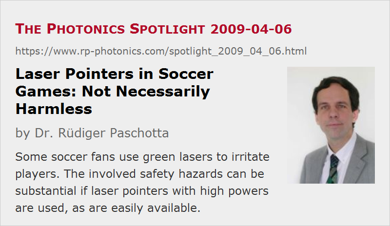

Laser Pointers in Soccer Games: Not Necessarily Harmless
Posted on 2009-04-06 as a part of the Photonics Spotlight (available as e-mail newsletter!)
Permanent link: https://www.rp-photonics.com/spotlight_2009_04_06.html
Author: Dr. Rüdiger Paschotta, RP Photonics Consulting GmbH
Abstract: Some soccer fans use green lasers to irritate players. The involved safety hazards can be substantial if laser pointers with high powers are used, as are easily available.

Ref.: encyclopedia articles on laser pointers, laser safety; The Photonics Spotlight 2006-12-16; German article in Welt Online Sport
It has now happened several times that soccer fans used green laser pointers for the purpose of irritating players. This behavior appears to be most popular among Greek fans, but was also noticed e.g. in Austria. In last October, I was interviewed by a Swiss private television channel, asking about the risk for human eyes, after the Swiss player Alex Frei had been targeted. I just learned that several similar laser attacks were launched recently in various games.
In my view, the safety hazards are not properly commented by some experts. For example, I read a (possibly not exact) quote from some expert, essentially saying that such laser pointers are not dangerous for the eyes as they have to stay below certain power levels. That may be true for most laser pointers, but it is easy to buy some which emit at by far higher power levels, while not being larger than the legal ones, or easily distinguishable in other ways. I discussed this in an earlier Spotlight article. There appears to be a fair chance that such hazardous devices are used for that purpose, as they can obviously have a greater effect. Therefore, I consider it quite inappropriate to call such behavior harmless, not knowing whether or not those laser types are used which are compliant with laser safety regulations.
In any case, it is of course highly stupid of fans to use lasers in such ways. Not only is it potentially unsafe and certainly unfair to irritate players. Fans may even invalidate a goal of their own team if the traces of their behavior are recorded by television cameras. It is also questionable whether interruptions of games are more exciting than the regular course. Some fans, however, appear not to be susceptible to any rational reasoning.
This article is a posting of the Photonics Spotlight, authored by Dr. Rüdiger Paschotta. You may link to this page and cite it, because its location is permanent. See also the RP Photonics Encyclopedia.
Note that you can also receive the articles in the form of a newsletter or with an RSS feed.
Questions and Comments from Users
Here you can submit questions and comments. As far as they get accepted by the author, they will appear above this paragraph together with the author’s answer. The author will decide on acceptance based on certain criteria. Essentially, the issue must be of sufficiently broad interest.
Please do not enter personal data here; we would otherwise delete it soon. (See also our privacy declaration.) If you wish to receive personal feedback or consultancy from the author, please contact him e.g. via e-mail.
By submitting the information, you give your consent to the potential publication of your inputs on our website according to our rules. (If you later retract your consent, we will delete those inputs.) As your inputs are first reviewed by the author, they may be published with some delay.
|  |
If you like this page, please share the link with your friends and colleagues, e.g. via social media:
These sharing buttons are implemented in a privacy-friendly way!